As far as possible, the ggfixest plotting functions
try to mimic the behaviour of their base compatriots. However, they also
offer additional functionality thanks to the ggplot2
API. This vignette will walk you through the key differences and
correspondences, specifically with regards to ggiplot
versus the original iplot.1
Start by loading ggfixest. This will automatically load ggplot2 and and fixest too, as both of these packages are required for this one to work.
In the examples that follow, I’ll be drawing on the
fixest introductory
vignette, as well as the iplot help documentation.
Example 1: Vanilla TWFE
Let’s compare the (base) iplot and ggiplot
default plots.
iplot(est_did)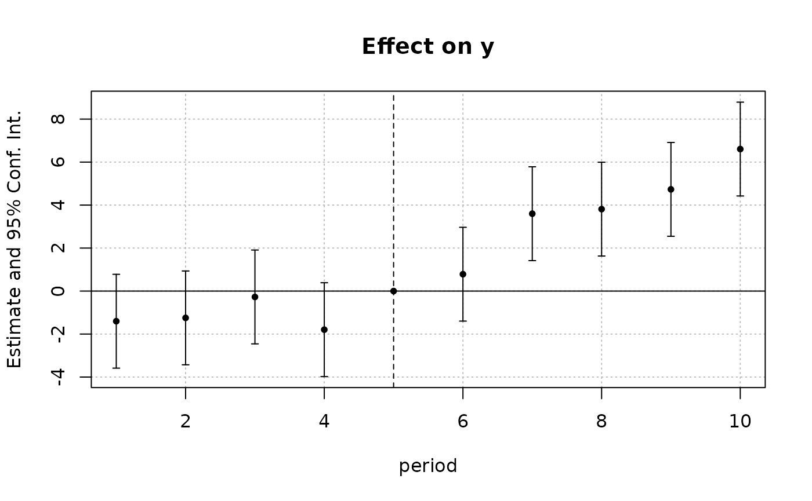
ggiplot(est_did)There are some small differences, but they are certainly producing
the same basic plot. To get even closer to the original, we could
specify the use of errorbar(s) rather than (ggiplot’s
default of) pointrange(s).
ggiplot(est_did, geom = 'errorbar')Many of the arguments for iplot carry over to
ggiplot too. This is deliberate, since we want to reduce
the cognitive overhead of switching between the two plotting methods.
For example, we can join points using the same
pt.join = TRUE argument.
iplot(est_did, pt.join = TRUE)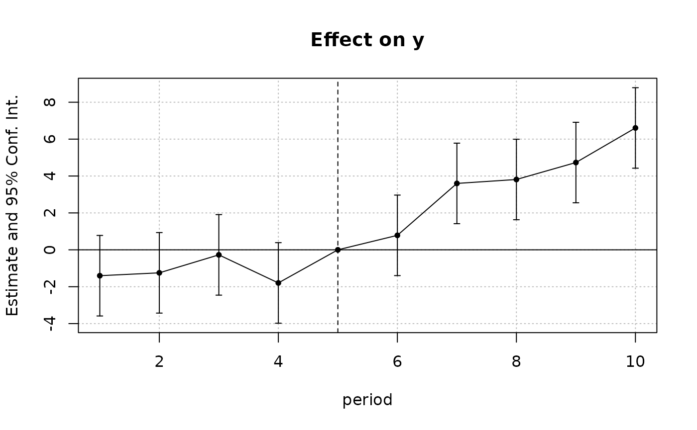
ggiplot(est_did, pt.join = TRUE, geom_style = 'errorbar')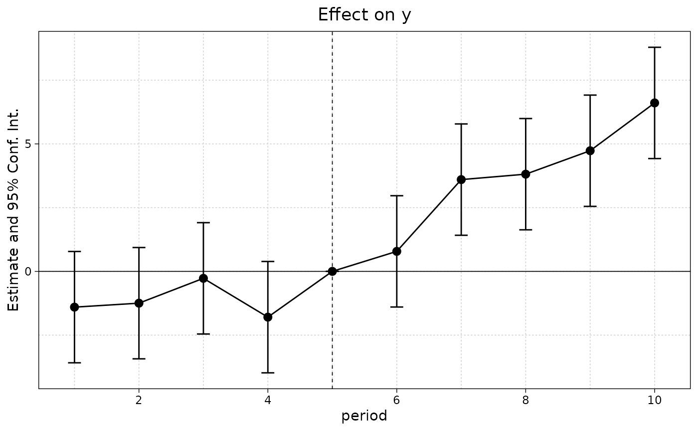
The ggiplot defaults are slightly different in some
cases, but may require less arguments depending on what you want to do.
For example,
# iplot(est_did, pt.join = TRUE, ci.lty = 0, ci.width = 0, ci.fill = TRUE)
iplot(
est_did, pt.join = TRUE, ci.lty = 0, ci.width = 0, ci.fill = TRUE,
ci.fill.par = list(col = 'black', alpha = 0.3)
)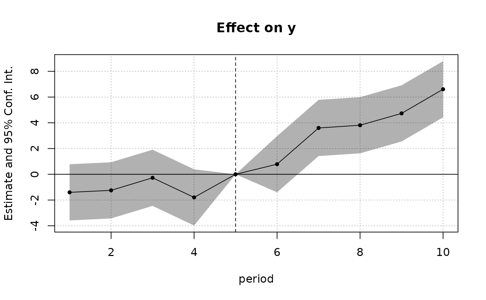
ggiplot(est_did, geom_style = 'ribbon')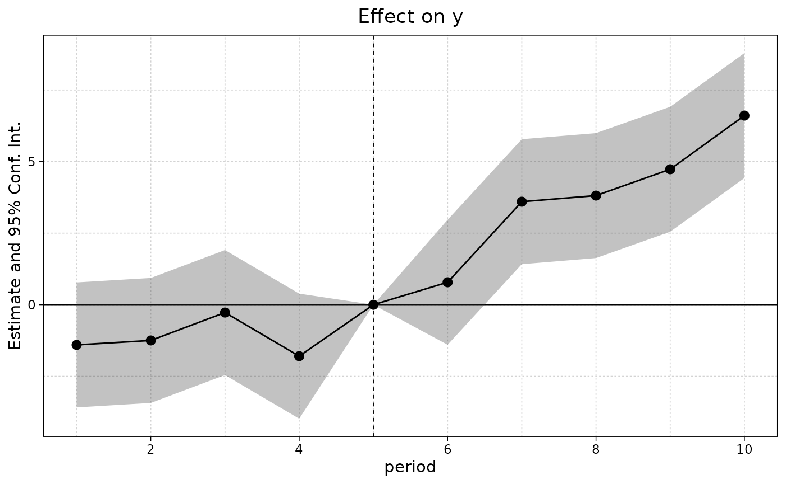
ggiplot(est_did, geom_style = 'ribbon', pt.pch = NA, col = 'orange')
#> Scale for colour is already present.
#> Adding another scale for colour, which will replace the existing scale.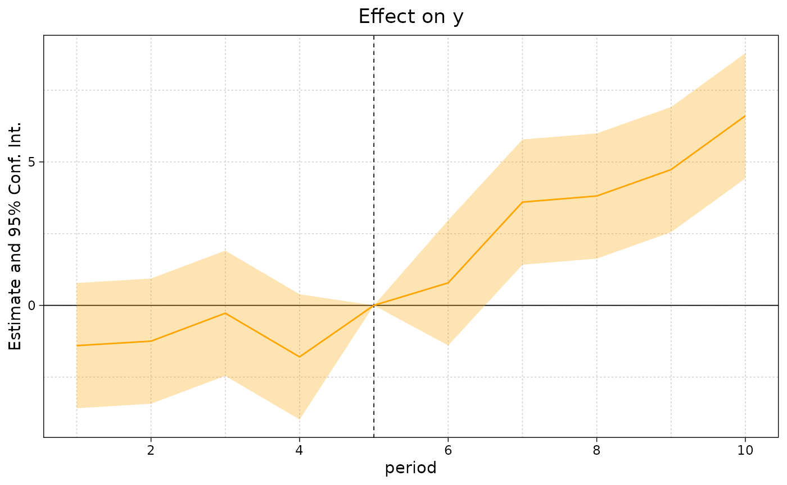
Unlike base iplot, multiple confidence interval levels
are supported. This works for ribbons too.
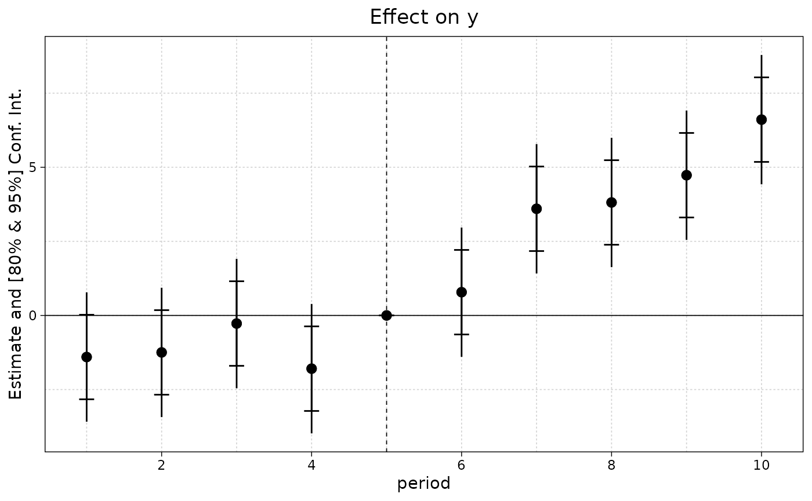
Another new feature (i.e. unsupported in base iplot) is
adding aggregated post- and/or pre-treatment effects to your plots.
Here’s an example that builds on the previous plot, by adding the mean
post-treatment effect.
ggiplot(
est_did, ci_level = c(.8, .95),
aggr_eff = "post", aggr_eff.par = list(col = "orange") # default col is grey
)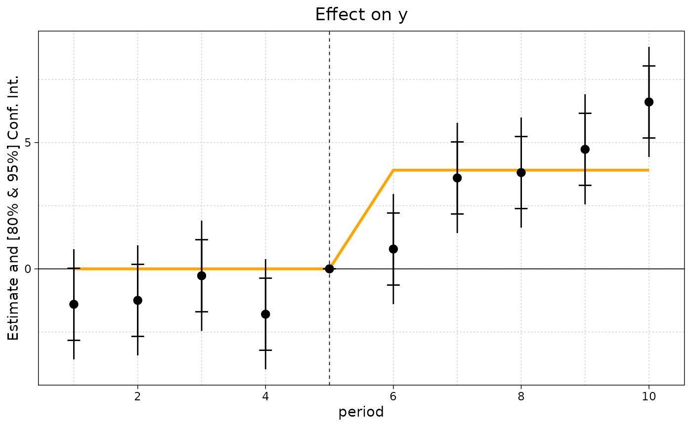
Example 2: Multiple estimation (i)
We’ll demonstrate multiple estimation functionality using the staggered treatment example (comparing vanilla TWFE with the Sun-Abraham estimator) from the fixest introductory vignette.
data(base_stagg)
est_twfe = feols(
y ~ x1 + i(time_to_treatment, treated, ref = c(-1, -1000)) | id + year,
data = base_stagg
)
est_sa20 = feols(
y ~ x1 + sunab(year_treated, year) | id + year,
data = base_stagg
)Again, for comparison, here the base iplot original.
Note that we add the legend manually.
iplot(
list('TWFE' = est_twfe, 'Sun & Abraham (2020)' = est_sa20),
main = 'Staggered treatment', ref.line = -1, pt.join = TRUE
)
legend(
'topleft', col = c(1, 2), pch = c(20, 17),
legend = c('TWFE', 'Sun & Abraham (2020)')
)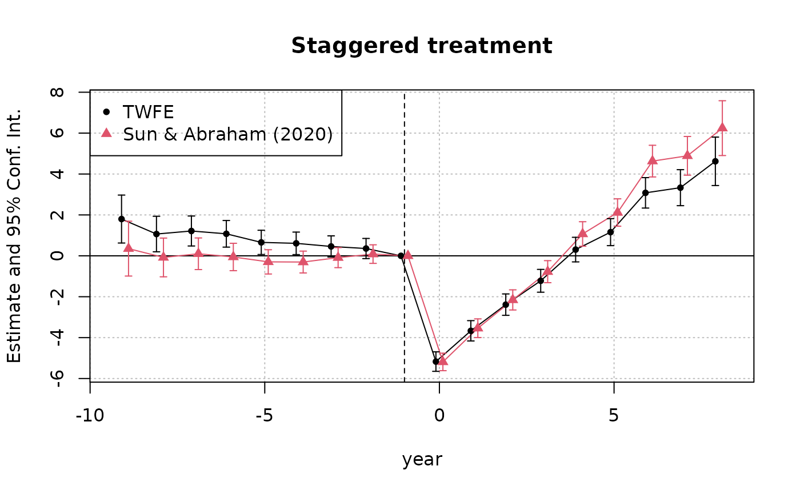
Here’s the ggiplot version.
ggiplot(
list('TWFE' = est_twfe, 'Sun & Abraham (2020)' = est_sa20),
main = 'Staggered treatment', ref.line = -1, pt.join = TRUE
)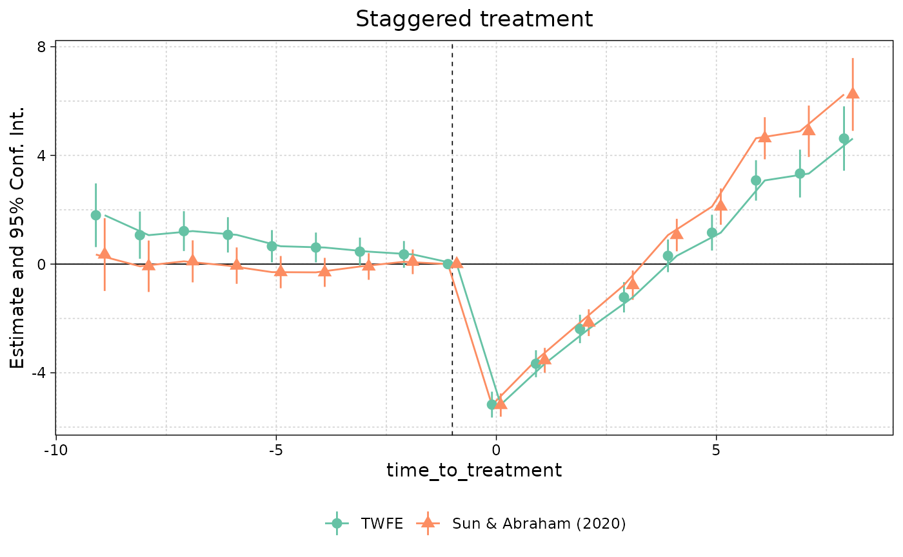
If we don’t name out list of models then it defaults to something sensible.
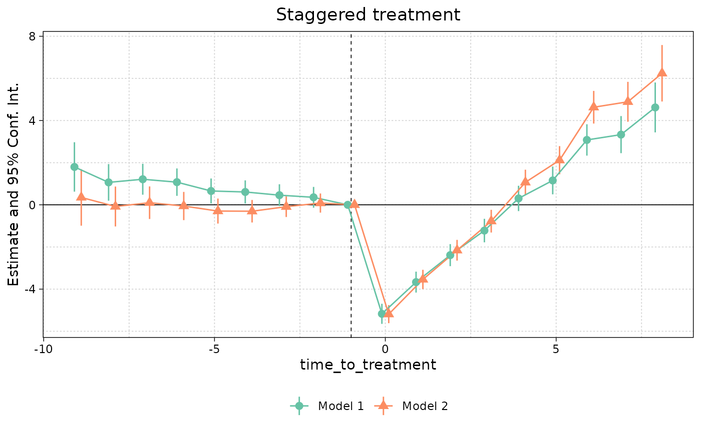
One nice thing about the ggplot2 API is that it
makes changing multiplot figures simple. For example, if you don’t like
the presentation of “dodged” models in a single frame, then it’s easy to
facet them instead using the multi_style = 'facet'
argument.
ggiplot(
list('TWFE' = est_twfe, 'Sun & Abraham (2020)' = est_sa20),
main = 'Staggered treatment', ref.line = -1, pt.join = TRUE,
multi_style = 'facet'
)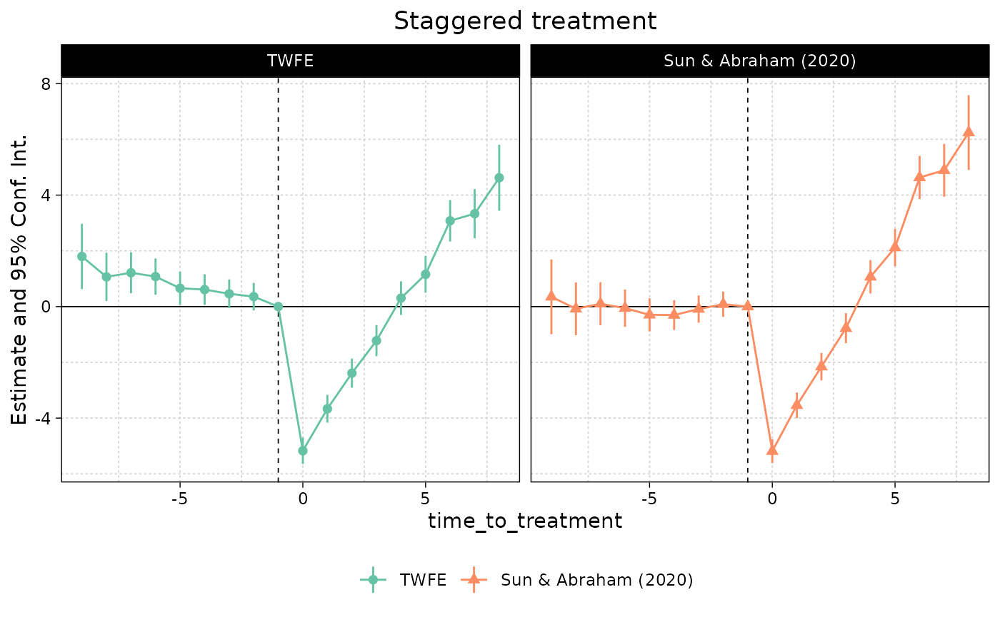
Example 3: Multiple estimation (ii)
An area where ggiplot shines is in complex multiple
estimation cases, such as lists of fixest_multi objects. To
illustrate, let’s add a split variable (group) to our staggered
dataset.
base_stagg_grp = base_stagg
base_stagg_grp$grp = ifelse(base_stagg_grp$id %% 2 == 0, 'Evens', 'Odds')Now re-run our two regressions from earlier, but splitting the sample
to generate fixest_multi objects.
est_twfe_grp = feols(
y ~ x1 + i(time_to_treatment, treated, ref = c(-1, -1000)) | id + year,
data = base_stagg_grp, split = ~ grp
)
est_sa20_grp = feols(
y ~ x1 + sunab(year_treated, year) | id + year,
base_stagg_grp, split = ~ grp
)Both iplot and ggiplot do fine with a
single fixest_multi object (although remember that we have
to manually add a legend for the former)
iplot(est_twfe_grp, ref.line = -1, main = 'Staggered treatment: TWFE')
legend('topleft', col = c(1, 2), pch = c(20, 17), legend = c('Evens', 'Odds'))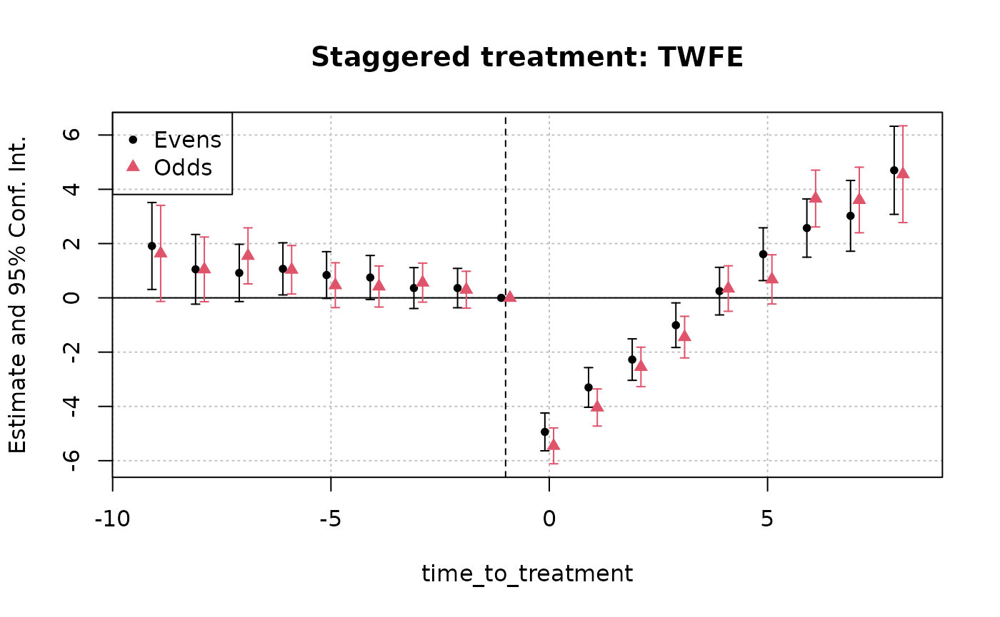
ggiplot(est_twfe_grp, ref.line = -1, main = 'Staggered treatment: TWFE')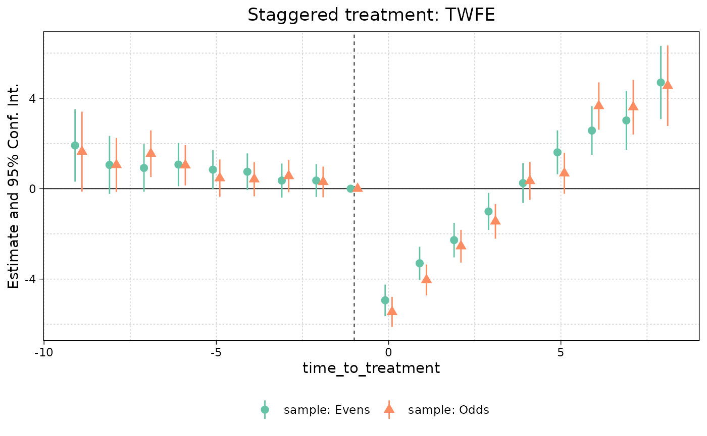
However, iplot complains if we combine a list of
several fixest_multi objects.
iplot(
list('TWFE' = est_twfe_grp, 'Sun & Abraham (2020)' = est_sa20_grp),
ref.line = -1, main = 'Staggered treatment: Split mutli-sample'
)
#> The degrees of freedom for the t distribution could not be deduced. Using a Normal distribution instead.
#> Note that you can provide the argument `df.t` directly.
#> Error: in iplot(list(TWFE = est_twfe_grp, `Sun & Abraham (2...:
#> The 1st element of 'object' raises and error:
#> Error in nb * sd : non-numeric argument to binary operatorIn contrast, ggiplot works…
ggiplot(
list('TWFE' = est_twfe_grp, 'Sun & Abraham (2020)' = est_sa20_grp),
ref.line = -1, main = 'Staggered treatment: Split mutli-sample'
)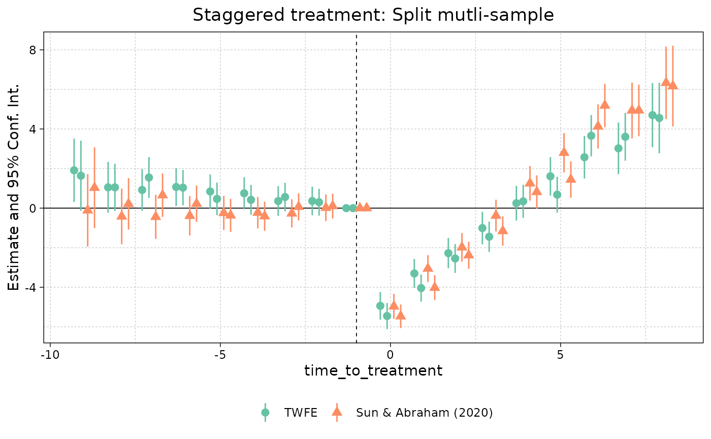
… but is even better when we use faceting instead of dodged errorbars. Let’s use this as an opportunity to construct a fancy plot that invokes some additional arguments and ggplot theming.
ggiplot(
list("TWFE" = est_twfe_grp, "Sun & Abraham (2020)" = est_sa20_grp),
ref.line = -1,
main = "Staggered treatment: Split mutli-sample",
xlab = "Time to treatment",
multi_style = "facet",
geom_style = "ribbon",
facet_args = list(labeller = labeller(id = \(x) gsub(".*: ", "", x))),
theme = theme_minimal() +
theme(
text = element_text(family = "HersheySans"),
plot.title = element_text(hjust = 0.5),
legend.position = "none"
)
)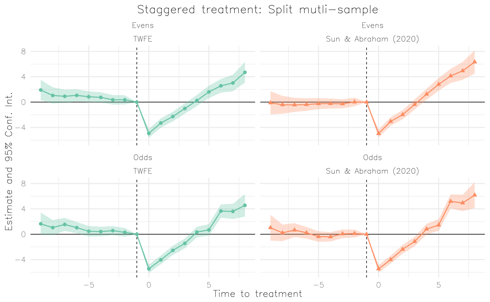
Asides
On theming and scale adjustments
Setting the theme inside the ggiplot call is optional
and not strictly necessary, since the ggplot2 API allows programmatic
updating of existing plots. E.g.
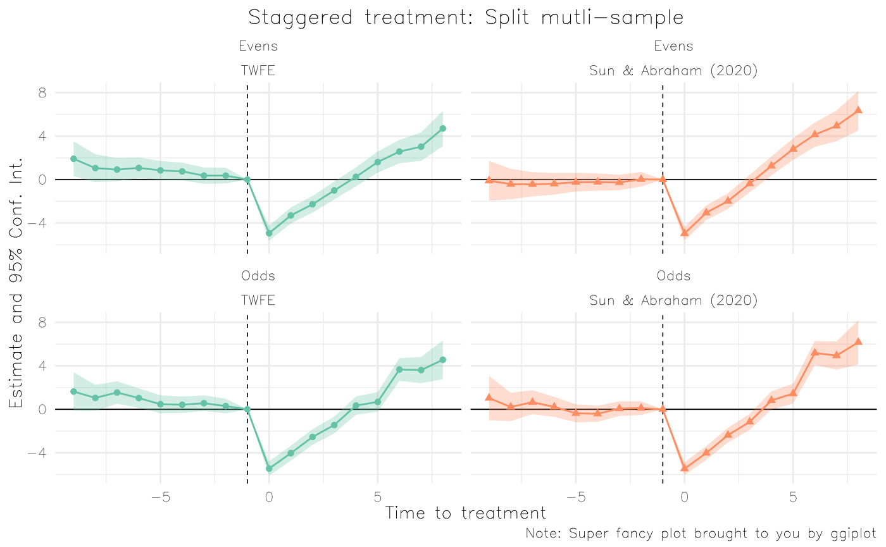
last_plot() +
theme_grey() +
theme(legend.position = 'none') +
scale_fill_brewer(palette = 'Set1', aesthetics = c('colour', 'fill'))
#> Scale for colour is already present.
#> Adding another scale for colour, which will replace the existing scale.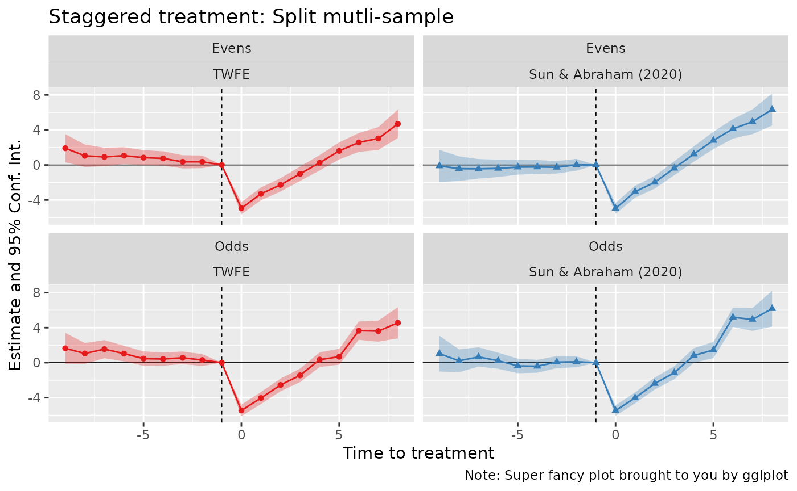
etc.
On dictionaries
Dictionaries work similarly to iplot. Simple
example:
base_did$letter = letters[base_did$period]
est_letters = feols(y ~ x1 + i(letter, treat, 'e') | id+letter, base_did)
# Dictionary for capitalising the letters
dict = LETTERS[1:10]; names(dict) = letters[1:10]
ggiplot(est_letters) # No dictionaryYou can either set the dictionary directly in the plot call…
ggiplot(est_letters, dict = dict)
… Or, set it globally using the setFixest_dict
macro.
setFixest_dict(dict)
ggiplot(est_letters)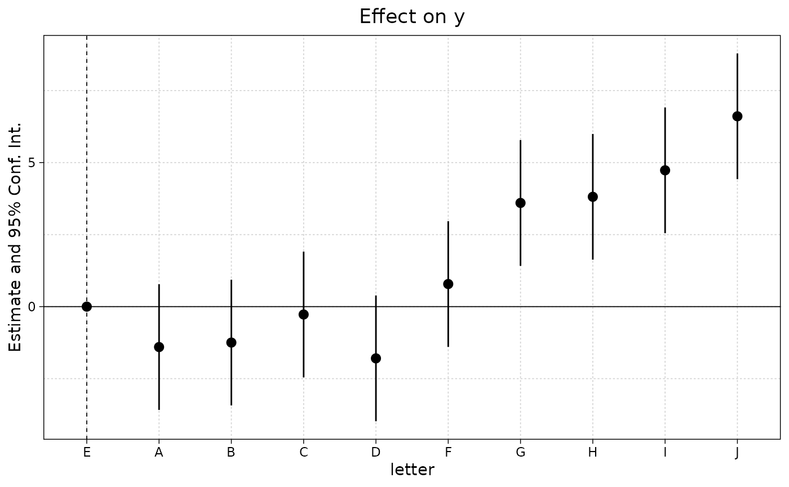
setFixest_dict() # reset